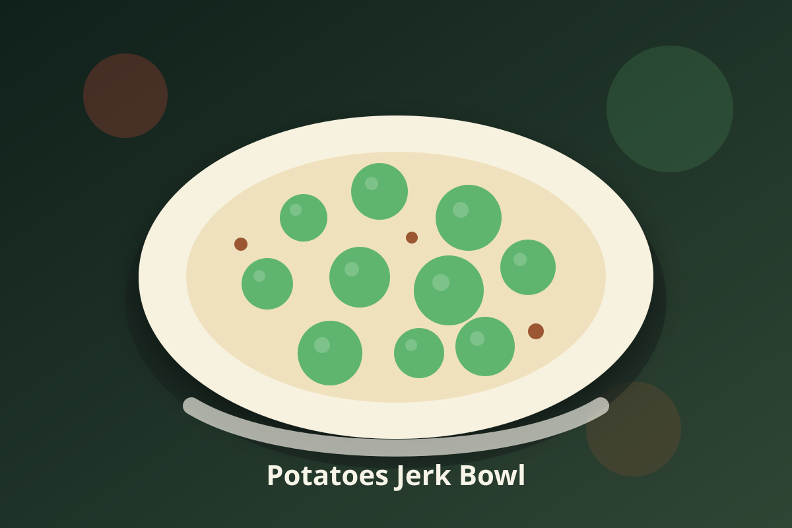

Jamaican · Vegan
Potatoes Jerk Bowl
A vegan jerk bowl built around potatoes with appliance-friendly steps and Jamaican-inspired island seasoning.

Ingredients
- 1 tablespoon coconut oil or vegetable broth
- 1 small onion, diced
- 2 cloves garlic, minced
- 2 scallions, sliced
- 1 teaspoon fresh thyme
- 1/2 teaspoon ground allspice
- 1/2 teaspoon sea salt, divided
- 1 cup light coconut milk
- 1 teaspoon low-sodium tamari or soy sauce, optional
- 1 tablespoon lime juice
- 1 teaspoon grated ginger
- 1/2 Scotch bonnet pepper, minced, optional
- 2 cups diced potatoes
- 1/2 teaspoon sea salt
- 1 cup pepper
- 1 teaspoon fresh thyme leaves
Instructions
- Steam potatoes: add 1 cup water to the Instant Pot inner pot, then set potatoes on a rack until just tender before adding them to the main preparation.
- Coat vegetables or beans with garlic, thyme, allspice, ginger, and Scotch bonnet.
- Air fry at 390°F for 8 to 10 minutes, shaking halfway, until lightly charred.
- Serve over brown rice with lime, scallions, and a small spoon of coconut sauce.